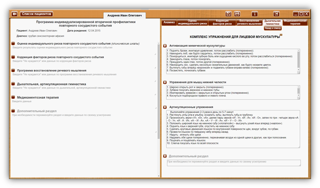

КОМПЛЕКС УПРАЖНЕНИЙ ДЛЯ ЛИЦЕВОЙ МУСКУЛАТУРЫ

Кнопка «Назад к списку» - для возврата к списку комплексов упражнений дыхательной, артикуляционной гимнастики.
 Сноски на источник.
Сноски на источник.
При наведении курсора на сноску на источник, открывается окно с текстом – описанием источника. При уводе курсора окно закрывается. Ознакомится со всеми источниками можно в разделе 26. Список литературы.
КОМПЛЕКС УПРАЖНЕНИЙ ДЛЯ ЛИЦЕВОЙ МУСКУЛАТУРЫ 7
 Активизация
мимической мускулатуры
Активизация
мимической мускулатуры
|
1. Поднять брови, имитируя удивление, потом расслабить (попеременно). 2. Нахмурить лоб, как будто сердитесь, потом расслабить (попеременно). 3. Поморщиться, имитируя зубную боль или ощущение кислого во рту, потом расслабиться (попеременно). 4. Зажмурить глаза, потом поморгать. 5. Прищурить один глаз, потом другой (попеременно). 6. Наморщить нос, сделать несколько нюхательных движений, как будто нюхаете цветок. 7. Вытянуть губы вперёд «воронкой» и подвигать губами вправо-влево (попеременно). 8. Посвистеть, почмокать губами. |
Шаблон назначения упражнения.
В данном пред заполненном шаблоне внесены упражнения, с возможностью редактирования специалистом. Внесенные изменения сохраняются в качестве шаблона (отображаются в личных кабинетах всех пациентов) с возможностью дальнейшего редактирования.
При нажатии на кнопку «+», в раздел «Дыхательная, артикуляционная гимнастика» программы индивидуализированной вторичной профилактики повторного сосудистого события пациента, в личный кабинет которого осуществлен вход, вносятся:
Дата. Заголовок раздела (в данном примере «Активизация мимической мускулатуры»)
Содержимое шаблона.
 Упражнения для мышц
нижней челюсти
Упражнения для мышц
нижней челюсти
|
1. Широко открыть рот и закрыть (попеременно). 2. Зубами покусать верхнюю и нижнюю тубы. 3. Имитировать жевание с закрытым и открытым ртом (попеременно). 4. Коснуться подбородком правого и левого плеча. |
 Артикуляционные
упражнения
Артикуляционные
упражнения
|
Выполняйте упражнения 2-3 раза в день по 5-7 минут. 1. Растянуть углы рта в улыбку, оскалить зубы, вытянуть губы в трубочку. 2. Произносить звуки «У», «0», «А»; далее пары звуков «И - У», «И - А», «И - О», затем по три - четыре звука «А - О - У», «И - А - И», «А – И - А», «А – У – И - А», «И – У – О - И». 3. Положить широкий язык на нижнюю губу («лопаткой») – высунуть узкий язык вперед («жалом»). 4. Поднять язык к верхней губе, опустить на нижнюю губу. 5. Сделать круговые движения языком по внутренней поверхности щёк, вокруг зубов, по губам. 6. Провести языком по твёрдому нёбу вперёд-назад. 7. Надуть - втянуть обе щеки. 8. Надувать обе щеки попеременно, перекачивая воздух из одной щеки в другую, как при полоскании. 9. Поцокать и пощёлкать языком. 10. Слегка покусать язык по всей плоскости. |
 Дополнительный
раздел
Дополнительный
раздел
|
При необходимости переименуйте раздел и введите данные по своему усмотрению
|
Дополнительный раздел дает возможность изменить заголовок и создать дополнительный раздел на усмотрение специалиста.